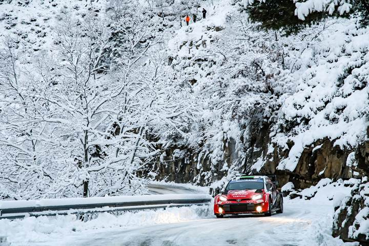
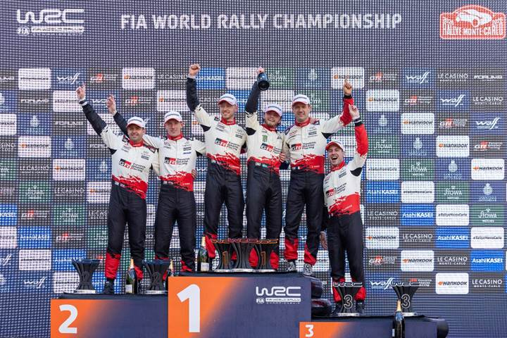

Una nueva temporada que inicia con el épico Rally Monte Carlo, donde el pasado fin de semana Oliver Solberg se convirtió en el ganador más joven de este prestigioso rally con tan solo 24 años liderando a Elfyn Evans y Sébastien Ogier para conseguir el 1-2-3 para el equipo TOYOTA GAZOO RACING.
El resultado es el primer podio completo de un solo fabricante en la prueba desde 2015, y la primera vez que Toyota logra esta hazaña. La victoria de Solberg es la séptima conseguida con un coche Toyota.
Condiciones Extremas en los Alpes

Aunque el Rallye Monte-Carlo es famoso por las condiciones invernales en los Alpes franceses, la edición de este año ha sido la más exigente en muchos años. La mayoría de las etapas estuvieron cubiertas por una combinación de nieve, hielo, lluvia y barro, con muy poco asfalto seco.
Estrategia Ganadora
Solberg y su copiloto Elliott Edmondson apostaron por una estrategia agresiva, atacando en los tramos más helados donde otros se contenían, especialmente el jueves por la noche.
Resiliencia al Volante
Solberg nunca había terminado por encima del puesto 14 en sus seis participaciones anteriores, pero se mostraba confiado al volante de su GR YARIS Rally1. Las condiciones planteaban riesgos reales; incluso Solberg se salió de la carretera de forma espectacular el sábado, logrando regresar a la ruta y aun así ganar la etapa.

La última etapa del domingo, en las montañas sobre Mónaco, incluyó el emblemático Col de Turini. Solberg tuvo un par de momentos complicados debido al hielo, pero finalmente se aseguró la victoria por una ventaja de 51,8 segundos, marcando el inicio de una nueva era en el WRC.